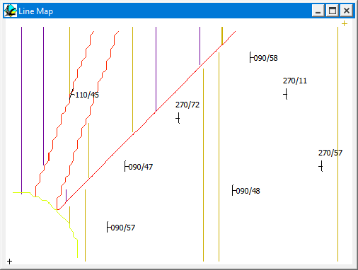
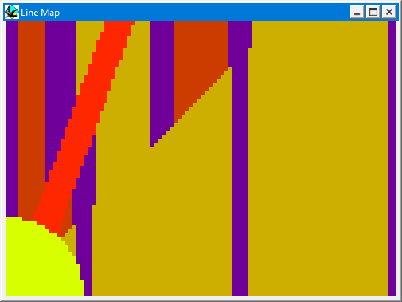

Maps
Maps can be viewed as soon as the base stratigraphy has been defined, and are selected by choosing Maps from the Geology menu. There are two submenu options:
- Solid Colours creating solid fill maps. These displays are more attractive.
- Lines which produce line maps. These displays are easier to view orientation data and discontinuities such as faults.
Maps show a plan view of the currently defined geology, with the line colours referring to the lower unit at the contact. The area will always be the same as the top surface of the geology displayed in the Block Diagram.


If a digital terrain model of the geology has been loaded (by ticking Use Topography in the Block Options window) the geology displayed will be the intersection geology for that land surface and the contours of the topography will also be shown. The shape of the digital terrain model is fixed, so changing the XY scale of the map also changes the XY scale of the digital terrain model.
Plotting orientation and rock type information
Once a Map or Topo Map has been drawn and until any history parameters or geology plot options are altered you can interrogate the map for structural orientation information by clicking the mouse at any point on the map. Orientations may only be measured up until the history is next edited, once you edit the history, you change the structure, and will therefore have to recalculate the Map or Topo Map in order to redefine the structure.
Plotting orientation symbols on maps
In order to plot a mapping symbol on a Line Map, choose the symbol type and event from the Symbol, Event 1 and Event 2 menus, and then click anywhere within the area of the line map with the mouse. The Symbol menu allows you to choose from:
- Bedding which plots a symbol showing the dip and dip direction of the bedding at the position selected by mouse. This also gives dyke wall orientations.
- Foliation which plots a symbol showing the dip and dip direction of the foliation chosen from the EVENT 1 menu, at the position selected by mouse. This option also calculates fault and unconformity surface orientation.
- Lineation which plots a symbol showing the plunge and plunge direction of the lineation chosen from the EVENT 1 menu, at the position selected by mouse.
- Bedding-Cleavage intersection lineation which plots a symbol showing the plunge and plunge direction of the intersection lineation defined by the foliation from the EVENT 1 menu and the local bedding orientation, at the position selected by mouse.
- Cleavage-Cleavage intersection lineation which plots a symbol showing the plunge and plunge direction of the intersection lineation defined by the foliation from the EVENT 1 menu and the foliation from the EVENT 2 menu, at the position selected by mouse.
Some deformation events, such as folds and faults, have "inherent" planar/linear features (e.g. folds automatically generate penetrative fold axial planes and fold axis lineations).
In order to specify which foliation (or lineation) you wish to measure, select an event from the EVENT 1 menu. For Cl-Cl intersection lineations only also select a second foliation from the EVENT 2 menu. All of this orientation data can be saved as a text file for input to a plotting program by choosing Save Orientations from the File menu.
The orientation of layering of a dyke can be measured using the Bedding option.
The orientation of a fault can be measured using the Foliation option.
Interactively defining event XYZ positions
While a map is the front window, the XYZ coordinates of the deformation defined by EVENT 1 can be redefined by selecting Position of Event 1 from the Define menu, and clicking in the map window. The new XYZ position of that event will be defined by the XY position of the mouse click and the Z level of the map.
Noddy · open source under the MIT licence · Loop3D/noddy_qt